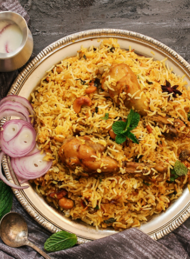

Saudi Traditional Kabsa

Prep: 40 mins
1 hr 30 Min - Cook time
2 hrs 10 mins - Total
8 Servings
INGREDIENTS
- 1/2
tbsp
dried whole lime powder
- 1/2
tbsp
ground allspice
- 2
tbsp
all-purpose flour
- 1/2
tbsp
ground cinnamon
- 1 onion, finely chopped
- 1/4
tbsp
ground cardamom
- 1/2
tbsp
saffron
- 1 (3 pound) whole chicken, cut into 8 pieces
- 1/4
tbsp
ground white pepper
- 1 pinch ground cumin
- 1 pinch ground coriander
- 3 1/4 cups hot water
- 1 cube chicken bouillon
- 1/4 cup tomato puree
DIRECTIONS
First Step:
- Mix together the saffron, cardamom, cinnamon, allspice, white pepper, and lime powder
in a small bowl, and set the spice mix aside.
Second Step:
- Melt the butter in a large stock pot or Dutch oven over medium heat. Stir in the
garlic and onion; cook and stir until the onion has softened and turned translucent,
about 5 minutes. Add the chicken pieces and brown them over medium-high heat until
lightly browned, about 10 minutes. Mix in the tomato puree.
Third Step:
- Stir in the canned tomatoes with their juice, the grated carrots, whole cloves,
nutmeg, cumin, coriander, salt, black pepper, and the Kabsa spice mix. Cook for about
3 minutes; pour in the water, and add the chicken bouillon cube.
Fourth Step:
- Bring the sauce to a boil, then reduce the heat to simmer and cover the pot. Simmer
until chicken is no longer pink and the juices run clear, about 30 minutes.
Fifth Step:
- Gently stir in the rice. Cover the pot and simmer until rice is tender and almost dry,
about 25 minutes; add the raisins and a little more hot water, if necessary. Cover and
cook for an additional 5 to 10 minutes or until the rice grains are separate.
USER COMMENTS
engage
make it so!
LINKS
Search for kabsa recipe
Home